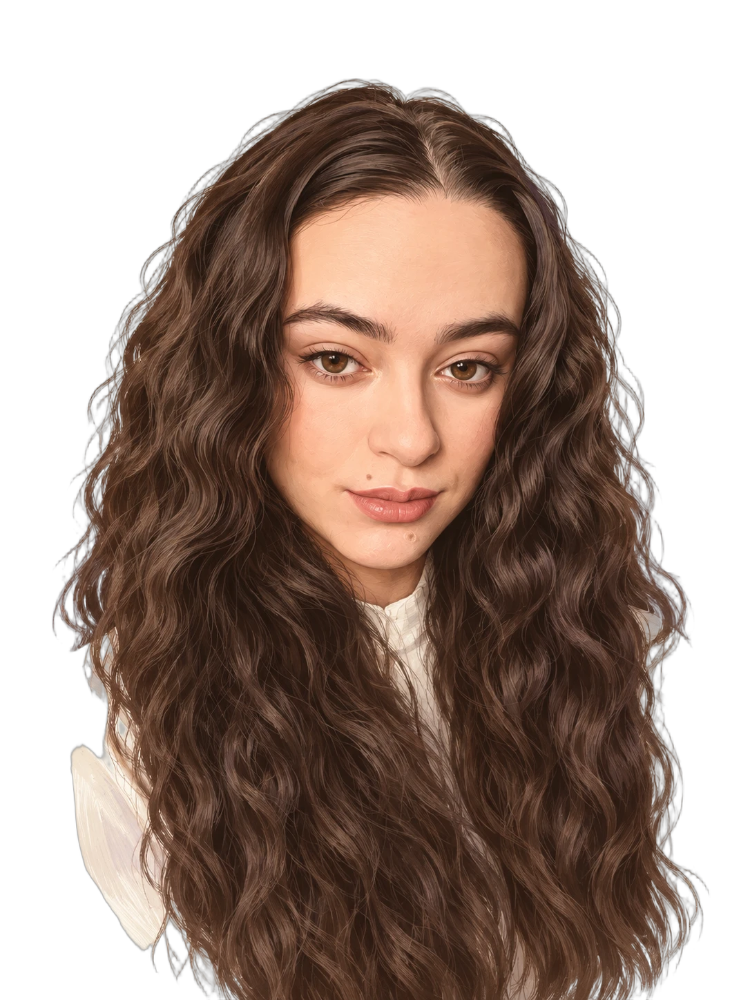

social media manager / creator & strategist
Vytváram obsah a stratégiu pre sociálne siete, ktoré menia sledovateľov na zákazníkov.

Tu je pár, kde to vyšlo.


Posledná zastávka
Zaujala ťa moja práca? Napíš mi, o čom je tvoja značka, a poďme na tom niečo postaviť.
Napísať Jane